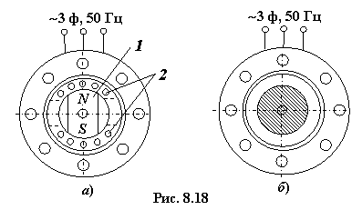

8.6.2. Гистерезисный синхронный микродвигатель
Вращающий момент гистерезисного СМД (ГСМД) (рис. 8.18б) возникает за счёт явления гистерезиса при перемагничивании ротора, выполненного из магнитнотвёрдого материала (Hc < 50 кА/м).
<.span>
<.span>

В отличие от СМД с постоянным магнитом, ротор которого предварительно намагничен, ротор гистерезисного СМД намагничивается и перемагничивается магнитным полем статора. Вследствие гистерезисного запаздывания между полюсами вращающегося магнитного поля статора и остающейся неразмагниченной областью ротора возникает тангенциальная составляющая силы притяжения, которая создаёт гистерезисный вращающий момент Мг двигателя.
При этом, если момент сопротивления на валу Мc < Мг, то ГСМД работает в синхронном режиме без перемагничивания ротора (n2 = n0 = const), а если Мc > Мг, то ротор ГСМД перемагничивается, а момент Мг остаётся неизменным при любом скольжении. Этот режим не экономичен из-за больших потерь энергии на перемагничивание.